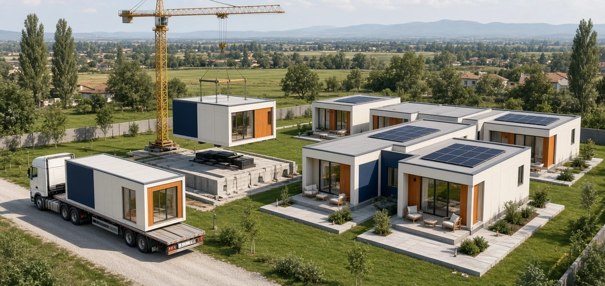
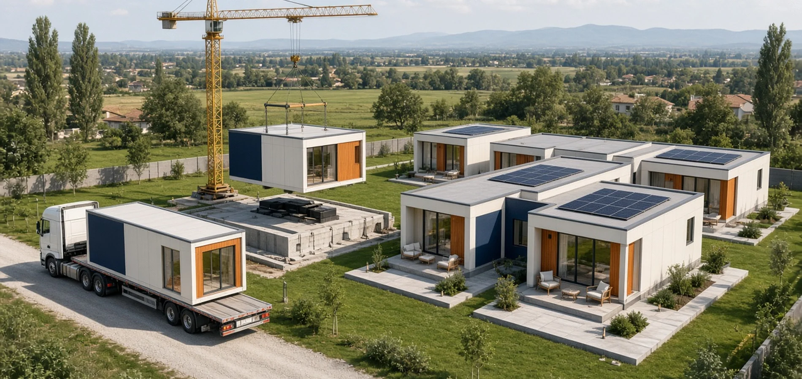
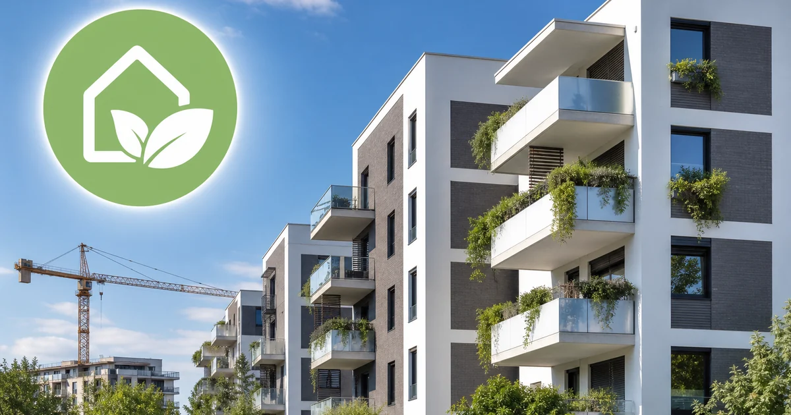

In sintesi
Case prefabbricate e narrativa Musk: Musk ha dichiarato di vivere in una Casita Boxabl affittata da SpaceX in Texas — non esiste una «casa Tesla» da 7.999 $. In Italia la prefabbricazione permanente è nuova costruzione (permessi, fondazioni, NTC 2018). Crescita di settore sì; sostituzione totale del mercato residenziale padovano: previsione editoriale — no.
Risposta diretta: le case prefabbricate e modulari possono crescere come segmento — spinto da costi, tempi di cantiere e industrializzazione — ma la storia «Elon Musk annuncia il futuro delle case per tutti» va filtrata: parte è reale (moduli Boxabl, interesse al minimalismo), parte è bufala virale (Tesla house con terreno incluso). Nel Padovano restano centrali OMI, perizia mutuo, vincoli comunali e qualità dello stock esistente.

Distinzione editoriale: Fatto — post Musk 2021 su abitazione ~50k$, rumor Tesla house smentito da fact-check. Dato di mercato — ricerche di settore su CAGR Italia prefabbricato (non statistiche ISTAT dedicate). Analisi Righetto — impatto su acquirenti e proprietari in Veneto. Previsione — nicchia in crescita, non rivoluzione totale entro 2030.
*Dimensione tipica citata in report internazionali · †Stima Mordor Intelligence 2025–2030, non dato ISTAT · ‡Prezzi abitazioni nuove, ISTAT citato via Adnkronos Q1 2026.
Cosa può fare Righetto
Il quesito: Le prefabbricate conviene considerarle a Padova?
- Nuove costruzioni — Confronto annunci e perizia mutuo in cintura (nuove costruzioni Veneto)
- Costi costruzione — Contesto prezzi materiali e ISTAT (costi costruzione)
- Valutazione terreno — Edificabilità e OMI prima di progettare (valutazione)
- Consulenza acquisto — Due diligence urbanistica e mutuo (consulenza)
Mediazione concordata in sede — nessun listino online. Tel. 049.8843484 · consulenza gratuita.
Cosa ha detto (e non detto) Elon Musk
Nel giugno 2021 Elon Musk ha scritto su X di avere come «primary home» una casa da circa 50.000 $ a Boca Chica/Starbase (Texas), affittata da SpaceX — definendola «kinda awesome». Report successivi (Fortune, Gulf News, fact-check The Cool Down) collegano quell'unità al mondo delle tiny house prefabbricate, spesso identificate come modulo Boxabl Casita (~20×20 piedi, ~361–400 ft²).
Musk non ha annunciato un piano ufficiale Tesla per «democratizzare» l'abitare mondiale con case a 7.999 $. La narrativa mediatica mescola tre fili: minimalismo del CEO, startup modulari americane, e clickbait su prodotti inesistenti. Per un'agenzia padovana la lezione è metodologica: separare il simbolo (CEO che vive in poco metri) dal mercato locale (permessi Comune di Limena o Padova, OMI, mutuo).
Il contesto texano spiega parte del fascino: zoning più permissivo in alcune aree, costo del suolo diverso dall'Italia nord-orientale, cultura del «detached single-family» su lotti ampi. Trasporre quella narrativa sul Padovano senza adattarla produce aspettative irrealistiche — famiglie che cercano trilocale in cintura non troveranno un equivalente «Casita» su Via Roma a Limena con le stesse regole urbanistiche.
Inoltre Musk ha più volte parlato di vendere gran parte dei beni materiali per concentrarsi su SpaceX e Tesla; l'abitazione minimalista è coerente con quel messaggio personale, non con un piano industriale Tesla per l'edilizia residenziale globale. Quando un post virale aggiunge «consegna in 48 ore» o «zero bolletta», stiamo già fuori dal perimetro verificabile.

Boxabl e l'housing factory-built negli USA
Boxabl è un'azienda reale di moduli pieghevoli: la Casita include cucina, bagno e utilities, con montaggio rapido in cantiere. Nel 2026 ha completato la quotazione Nasdaq (ticker BXBL) e comunicato crescita delle consegne — dati da verificare su filing SEC e comunicati PRNewswire, non su post social.
Il modello USA enfatizza standardizzazione in fabbrica, riduzione sprechi e tempi. Limiti strutturali restano: costo del suolo, hook-up utilities, zoning locale, trasporto moduli. Il prezzo «base» del modulo non è il costo «chiavi in mano» — fondamenta, permessi, allacci e finanziamento mutuo aggiungono voci rilevanti (analisi Intelligent Living, The Cool Down).
La logica «factory-built» è reale e condivisa anche in Europa: pannelli, legno lamellare, steel-frame e volumi completi viaggiano su strada fino al cantiere. La differenza operativa in Veneto non è tecnologica ma regolatoria e di mercato: chi compra qui deve pensare al lotto, al tecnico abilitato, al collaudo e alla rivendita futura — non al tweet del CEO.
Tipologie di prefabbricazione (senza confusione terminologica)
Spesso si mescolano concetti diversi. Utile una mappa rapida:
- Modulo volumetrico — unità quasi completa in fabbrica, trasportata e agganciata (modello Casita / Boxabl).
- Prefab strutturale — travi, pannelli, tamponamenti prodotti off-site e assemblati in cantiere (comune in edilizia industrializzata italiana).
- Mobile home / roulotte abitative — regime diverso; non equivalgono a nuova costruzione permanente senza iter dedicato.
- Capsule e tiny house su ruote — soluzioni temporanee o complementari; attenzione a vincoli comunali padovani.
Confondere queste categorie è il primo errore dell'acquirente distratto dal marketing Musk-style.
| Affermazione virale | Verifica | Nota operativa Italia |
|---|---|---|
| «Casa Tesla» a 7.999 $ con terreno | Falsa — Tesla non vende abitazioni | Diffida annunci e-commerce non certificati |
| Musk vive in modulo ~50k$ in Texas | Dichiarazione Musk 2021 + report stampa | Non implica disponibilità prodotto in UE |
| Boxabl = futuro unico dell'abitare | Previsione — settore in crescita, non monopolio | Concorrenza EU: industrializzati, legno, cemento |
| Prefab = senza permessi | Falsa in Italia per abitazione permanente | Permesso di costruire / SCIA secondo DPR 380/2001 |
Bufale virali: perché confondono gli acquirenti
Post e video che mostrano «consegna gratis» o «zero IMU» su prodotti americani generano lead inutili anche in Italia. Regola pratica in sede Righetto: se l'offerta non indica comune, agibilità, classe energetica e conformità urbanistica, non è paragonabile a un annuncio immobiliare padovano verificabile.
Cross-link utile: guida comprare casa Padova, checklist pre-compromesso.
Italia: normativa, permessi e qualità costruttiva
In Italia un'abitazione prefabbricata fissa e permanente è una nuova costruzione ai sensi del Testo unico edilizia (DPR 380/2001): serve terreno edificabile, progetto, titolo abilitativo (Permesso di costruire o SCIA secondo casi), conformità NTC 2018, requisiti energetici, impiantistici e antisismici. La prefabbricazione cambia dove si produce l'involucro, non se valgono le regole.
Fonti divulgative (Adnkronos/Prometeo, portali tecnici) ribadiscono: moduli low-cost online non trasformano un lotto agricolo in edificabile; vincoli paesaggistici e idrogeologici restano. Per il Veneto, verificare sempre piano regolatore comunale — Limena, Padova, Rubano hanno regole diverse su altezze, distacchi, materiali.
Il Veneto non è zona sismica come il Centro-Sud, ma le NTC 2018 valgono comunque per progettazione strutturale e dettagli costruttivi. Un modulo importato deve avere documentazione tradotta, marcatura CE dove applicabile, e un progettista italiano che ne assuma l'integrazione nel contesto locale. Senza questo pacchetto, la banca non eroga e il Comune non rilascia agibilità.
Catasto, APE e conformità urbanistica
Dopo il montaggio servono aggiornamento catastale, certificazione energetica e verifica di conformità urbanistica ed edilizia. Sono gli stessi passaggi di una villetta tradizionale. Chi promette «montaggio in un weekend = abitabile subito» omette mesi di pratiche. In sede Righetto consigliamo sempre di chiedere al venditore del modulo l'elenco scritto di cosa è incluso: solo involucro? Impianti? Progetto asseverato? Assistenza permessi?
Per immobili già esistenti da riqualificare con moduli aggiuntivi (es. dependance, studio, ampliamento), valutare se rientra in manutenzione straordinaria, ristrutturazione edilizia o nuova volumetria — regole diverse per ogni caso nel regolamento edilizio comunale.
Fondazioni, mutuo e perizia bancaria
La banca mutua l'immobile finito e conforme, non il catalogo factory. Servono perizia, titolo edilizio, APE, agibilità. Un modulo «scontato» ma fuori perizia o su suolo non edificabile non è alternativa al trilocale usato in cintura — vedi mutuo prima casa Padova.
| Passo | Obbligo tipico | Chi verifica |
|---|---|---|
| Edificabilità terreno | Piano regolatore, indici | Tecnico + Comune |
| Titolo abilitativo | PdC / SCIA | Comune |
| Struttura e sismica | NTC 2018 | Progettista strutturale |
| Energia | Requisiti minimi / APE | Certificatore |
| Finanziamento | Perizia banca | Istituto di credito |
Mercato Veneto e Padova: dove entra la prefabbricazione
L'Osservatorio congiunturale ANCE (gennaio 2026) indica per il 2026 un rimbalzo della riqualificazione (+3,5%) e pressione sul segmento nuove abitazioni (-4,5% investimenti). In parallelo, ricerche di mercato (Mordor Intelligence) stimano per l'Italia un CAGR >5% nel comparto manufactured homes 2025–2030 — va letto come stima commerciale di settore, non conteggio ISTAT ufficiale.
ISTAT, tramite rilevazioni su prezzi delle abitazioni nuove, segnala nel primo trimestre 2026 dinamiche di mercato che incidono sul confronto tra costruire e comprare usato — dato utile per il mutuo, non per validare slogan social su «case a prezzo smartphone». Consultare l'archivio prezzi ISTAT e l'Osservatorio OMI (ADE) resta obbligatorio.
Nel Padovano la domanda residenziale resta ancorata a usato ristrutturato e nuovo promozionale in cintura (Limena, Vigonza, Rubano) — vedi nuove costruzioni Veneto e mercato Limena. La prefabbricazione entra spesso come:
- Ampliamenti e strutture temporanee cantieristiche (diverse da abitazione permanente).
- Edilizia industrializzata in progetti multi-unità con general contractor.
- Soluzioni innovative (legno, steel-frame) promosse da player italiani — non solo moduli USA.

Pro e contro per famiglie e proprietari padovani
Prima di lasciarsi guidare da un render 3D — come quello in apertura — conviene tradurre estetica e narrativa in numeri: costo totale, tempo burocratico, mutuo, rivendita. Il prefabbricato non è intrinsecamente «economico» o «costoso»: dipende da suolo, finiture, impresa locale e percorso autorizzativo.
Potenziali vantaggi
- Tempi di cantiere potenzialmente più brevi se supply chain è matura.
- Controllo qualità in ambiente factory su componenti ripetibili.
- Interessante per estensioni, seconda unità, housing temporaneo regolamentato.
- Maggiore attenzione a efficienza energetica integrata in progetto.
Rischi e limiti
- Costo totale spesso sottostimato (suolo, opere, finanziamento).
- Perizia mutuo e revoca permessi se difformità.
- Percezione di mercato secondario nella rivendita — comparabili OMI limitati.
- Hype internazionale (Musk) scollegato da pratiche comunali padovane.
Confronto con l'usato in cintura: decisione reale 2026
Molte famiglie under 36 nel Padovano confrontano mutuo su trilocale usato vs sogno «casa nuova modulare». L'usato in cintura offre quartiere consolidato, servizi, comparabili OMI (ADE). Il prefabbricato nuovo offre involucro recente ma richiede terreno, tempo burocratico e rete di fornitori locali affidabili. Non esiste vincitore assoluto: esiste il profilo (terreno già in proprietà? budget mutuo? orizzonte 10 anni?).
Esempio di ragionamento (non simulazione prezzi inventati): se il terreno è già in famiglia in comune dell'hinterland, il prefabbricato può avere senso come percorso «chiavi in mano» con impresa che gestisce iter completo. Se invece si cerca prima casa senza terreno, l'annuncio usato o il nuovo in condominio restano percorsi più lineari per mutuo e perizia — tema trattato in mutuo under 36.
Approfondimenti: comprare casa Padova, Limena vs Padova centro, costi costruzione ISTAT Padova.
Domande frequenti in agenzia (e risposte oneste)
«Posso comprare online un modulo come su Amazon?» — Puoi pagare un acconto a un fornitore, ma l'immobile finito esiste solo dopo progetto, permessi, fondazioni e collaudi. Non confondere e-commerce con rogito.
«Il render 3D del catalogo è la casa che avrò?» — No: è visualizzazione commerciale. Materiali, orientamento, vincoli paesaggistici e finiture reali cambiano l'esito.
«Musk ha detto che costano poco, quindi conviene aspettare?» — Musk ha descritto la propria scelta abitativa, non un prezzo di mercato padovano. Aspettare hype non sostituisce analisi OMI e mutuo.
«E per affittare un prefabbricato?» — Se non conforme come abitazione permanente, non va paragonato a un bilocale in affitto regolare. Per locazioni vedi affittare casa Padova.
In sintesi: il render 3D aiuta a immaginare il montaggio modulare; la consulenza immobiliare serve a verificare se quell'immaginario è legalmente ed economicamente sostenibile nel comune scelto — Limena, Padova o altro.
Outlook 2026–2030: «futuro» sì, ma quale?
Previsione (analisi Righetto, settembre 2026): la prefabbricazione crescerà in Italia come componente dell'offerta (industrializzazione, riqualificazione, emergenze abitative, studentati), non come sostituto totale del mattone padovano. La narrativa Musk/Boxabl accelera curiosità e traffico web, ma non semplifica permessi comunali né crea comparabili OMI immediati.
Scenario alternativo: progressi normativi e incentivi per off-site + crisi costi tradizionali potrebbero spostare quota di mercato più velocemente in zone verdi con suolo disponibile (hinterland veneto). Monitorare ANCE, ISTAT prezzi nuovo (archivio prezzi abitazioni) e delibere comunali — non solo tweet.
Tre driver plausibili per il quinquennio: (1) costo del lavoro in cantiere — spinge verso produzione in fabbrica; (2) efficienza energetica — moduli progettati con pacchetto impianti integrato; (3) tempi — famiglie che vogliono ridurre mesi di cantiere aperto in vicinanza di abitazioni esistenti. Nessuno di questi elimina perizia, catasto o mediazione immobiliare locale.
Per il mercato padovano specifically, immaginiamo una convivenza: promozioni traditionali in cintura, riqualificazione dell'usato urbano, e nicchia prefabbricata su lotti singoli in comuni dell'hinterland dove il PRG consente volumetrie compatte. Il «futuro Musk» resta narrativa globale; il futuro operativo del cliente Righetto resta veneto, verificabile e rogitato.
Per proprietari e investitori: opportunità concrete
Chi possiede terreno edificabile in Veneto può valutare industrializzazione con progetto e impresa generalista — non acquistare moduli online senza due diligence. Chi vende usato competitivo in cintura non deve temere un «crollo» immediato: la liquidità resta su annunci pronti, APE decenti, prezzo allineato OMI (vendere casa Limena).
Consiglio pratico per proprietari di terreno: prima della visita in fiera o del preventivo modulare, richiedete a un tecnico padovano una prefattibilità urbanistica scritta (indici, distacchi, eventuali vincoli idrogeologici del Bacchiglione). Risparmia mesi rispetto a scoprire in Comune che la volumetria non consente l'unità vista nel render.
Per investitori, attenzione: il rendimento locativo di un prefabbricato non conforme o su area non residenziale non è paragonabile a un bilocale in zona servita — errori di asset class distorcono ogni analisi di rendimento.
Gruppo Immobiliare Righetto opera dal 2000 su 101 comuni, con oltre 350 immobili gestiti e 98% di soddisfazione clienti (127 recensioni Google, media 4,9/5). Il compenso di mediazione si concorda in sede — nessun listino percentuale online.
Ultimo aggiornamento: 14 settembre 2026. Fonti: post Musk 2021, fact-check The Cool Down, PRNewswire Boxabl, Adnkronos/Prometeo, ANCE gen 2026, Mordor Intelligence (stima mercato). Nessun prezzo prodotto inventato.
Domande frequenti

Righetto Immobiliare — Limena e Padova dal 2000.